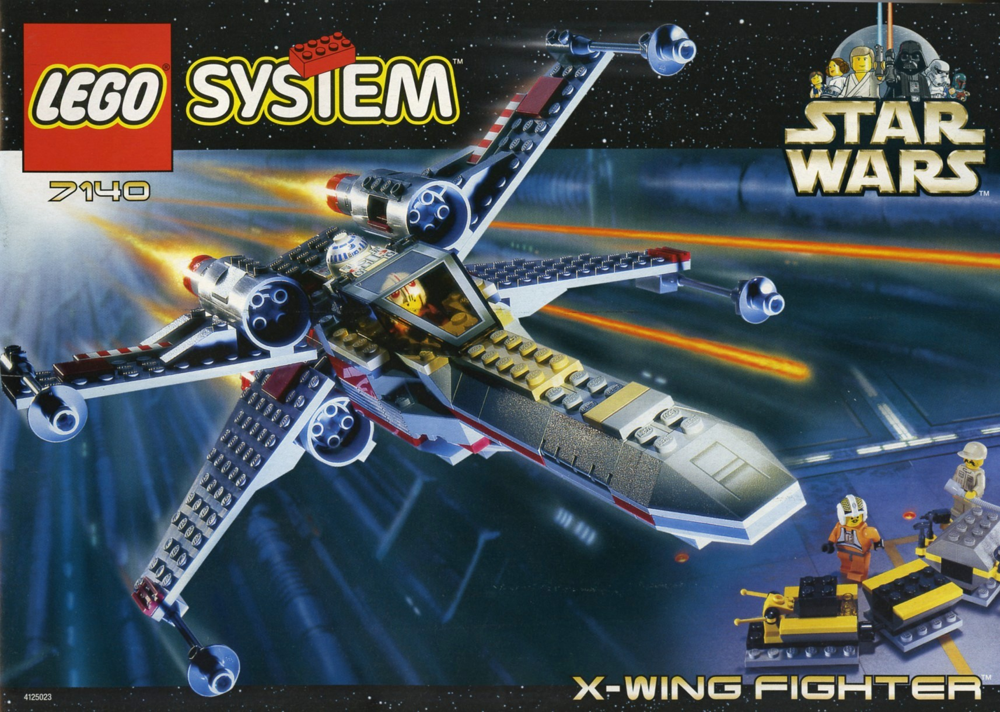

1.개요
2.역사
3.놀이 방법
4.주요 제품군
5.관련 커뮤니티
History
레고는 약 100여년 가까이 장수한 덴마크의 장난감 브랜드입니다. 100년 기업 레고의 발자취를 더듬어가며 레고의 변천사를 간략히 소개시키겠습니다.
레고는 1932년 올레 키르크 크리스티얀센에 의해 만들어졌습니다.
본디 목공소를 운영하던 장인으로서 장난감과는 연이 멀었지만 대공황이 들이닥치며 상황이 달라지게 됩니다.
당시 대공황의 타격을 입고 어려워 하던 도중 나무 장난감을 팔기 시작한 것이 계기였는데, 장난감들이 제법 인기를 끌자 주력 사업으로 삼게 된 게 레고의 시작입니다.
올레의 사후 그의 아들 고트프레드 키르크 크리스티얀센이 회장으로 취임하면서 오늘날 우리가 아는 레고 블럭을 만들기 시작하였고, 1958년에 오늘날의 레고의 전신이 되는 플라스틱 완구 세트를 출시합니다.
상상하는 무엇이든 만들어낼 수 있다는 레고 특유의 강점이 아이들한테 제대로 먹혀 높은 매출을 기록하자 기존의 나무 장난감 사업을 정리하고 플라스틱 블럭 사업에 집중하게 됩니다.
초창기의 레고는 블록만으로 구성된 조촐한 모습을 보였습니다.
아이들의 창의성을 표현하기에는 너무나 단순하였고 이를 극복하기 위해 역동성을 구현하고자 했습니다.
그 결과 바퀴와 피규어가 탄생하니, 이는 향후 레고 제품을 구성하는데 있어 필수적인 부품 중 하나로 자리잡게 됩니다.
1973년 오일쇼크가 터지면서 힘든 시기를 보내던 와중 77년에 차후 3대 회장이 되는 켈 키르크 키르스티얀센이 새로운 비즈니스 모델을 제시합니다. 기존에 출시한 제품들 중에서 가장 인기있던 제품들을 발전시켜 특정 테마로 묶어 구성하는 것이었습니다.
테마가 발전함에 따라 다양한 디자인이 도입되었고 점점 더 많은 이야기를 담으면서 장난감으로서의 깊이를 더했습니다.
1999년 레고 최초의 콜라보 시리즈 '스타워즈'를 출시합니다. 이 시리즈는 레고와 루카스필름이 함께 작업하여 탄생한 제품으로, 전세계적인 인기 영화 "스타워즈"를 기반으로 한 레고 브랜드의 첫 번째 영화 기반 제품군이었습니다.
이후에도 레고는 다양한 콜라보 제품들을 출시하며 팬들의 사랑을 받고 있습니다.

1
2
3
4
5
TOP


 상상하는 무엇이든 만들어낼 수 있다는 레고 특유의 강점이 아이들한테 제대로 먹혀 높은 매출을 기록하자 기존의 나무 장난감 사업을 정리하고 플라스틱 블럭 사업에 집중하게 됩니다.
상상하는 무엇이든 만들어낼 수 있다는 레고 특유의 강점이 아이들한테 제대로 먹혀 높은 매출을 기록하자 기존의 나무 장난감 사업을 정리하고 플라스틱 블럭 사업에 집중하게 됩니다.